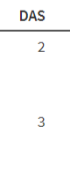
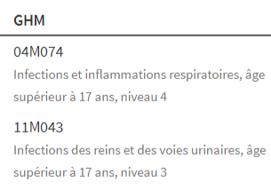
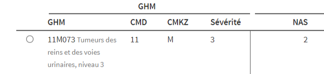
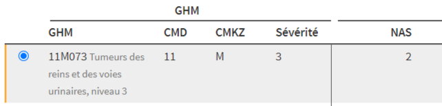

Présentation des écrans
Descriptif des écrans des familles “Bases”, “Analyses” et “ACE”
Introduction
Pour tous les champs PMSI, les écrans des familles “Bases”, “Analyses” et “ACE” se présentent tous de la même façon.
Chacun de ces écrans comprend 4 parties :
- Des filtres
- Un tableau ou un graphique
- Des liens pour exporter les données du tableau en csv/excel ou JSON
- Un lien pour accéder à la documentation en ligne de l’écran
Filtres
Voir Les types de filtres
Un même filtre est toujours affiché au même endroit dans tous les écrans ayant ce filtre.
La 1ere ligne de filtres correspond aux filtres génériques classiques du champ PMSI de l’écran (année, mois, um, autorisation, mode ou type d’hospitalisation, nas).
Exemple des filtres de l’écran “Base des RUM”

Tableaux
Les tableaux se présentent de la même façon dans tous les écrans :
- une suite de colonnes
Une colonne a un intitulé explicite
Le contenu des cellules peut être simple (une valeur, un code, un pourcentage) ou complexe (un code + son libellé, un mini graphique, plusieurs valeurs affichées les unes en dessous des autres).
Les informations qui composent les cellules se retrouvent, sous forme de variables simples, dans l’export.
Dans l’accès Standard, des colonnes peuvent ne pas être affichées (voir la documentation de chaque écran).
les colonnes sont triables par ordre alphabétique ou numérique, en cliquant sur l’intitulé de la colonne 1
en sélectionnant une ligne, l’utilisateur est automatiquement redirigé vers l’écran présentant la liste des items de la ligne (liste de RUM, RHS, séjours, codes CIM, détail d’un RUM, d’un RHS, d’un RPS, etc….)
Pour sélectionner une ligne, cliquer sur la ligne.
En recliquant sur la ligne, la ligne est désélectionnée.
Fonctionnalité de l’accès Professionnel.
- les tableaux s’affichent sous forme de pages (20 lignes par défaut) qu’il est possible de feuilleter dans les 2 sens.
Il est possible de modifier le paramétrage du nombre de lignes par page : 10, 20, 50 ou 100
- en dessous du tableau, une ligne affiche le nombre total de lignes du tableau, le paramétrage du nombre de lignes par page et le numéro de la page.
Illustrations
Colonnes de l’écran “Base des RUM”


2 colonnes de l’écran “Base des RUM”
Colonne “DAS” = colonne simple avec une seule valeur (ici le nombre de DAS du RUM)
Colonne “GHM” = colonne complexe avec 2 informations (le code GHM du RUM et le libellé correspondant du GHM)


Premières colonnes d’une ligne de l’écran “Case-mix GHM”
1ere image : la ligne n’est pas sélectionnée
2eme image : la ligne est sélectionnée.
En la sélectionnant, l’utilisateur a été automatiquement redirigé vers l’écran “Liste séjour” avec la liste des séjours classés dans le GHM de la ligne (ici 2 fake séjours du jeu de données MCO de la formation DataPMSI).
Graphiques
Le type de graphique est fonction de l’analyse de l’écran.
A chaque graphique est associé en export ses données .
Exports
En dessous des tableaux, 2 liens pour exporter les mêmes données, l’un au format csv, l’autre au format JSON
Dans les exports, toutes les variables sont déployées de manière individualisées.
Exemple : les informations de la colonne “GHM” de l’écran “Base des RUM” (voir illustration ci-dessus) sont exportées via 2 variables (“ghm” et “ghm_lib”)
Par défaut, le titre du fichier exporté (csv ou JSON) est de la forme “nom_analyse_AAAA-MM-JJ.extension”
Exemple : “casemix_ghm_2023-02-08.json”
Documentation
Accès en ligne via le lien “Documentation” situé en bas de l’écran, en dessous du tableau ou du graphique.
Notes de bas de page
dans quelques cas particuliers, indiqués dans la documentation de l’écran, les colonnes ne sont pas triables.↩︎